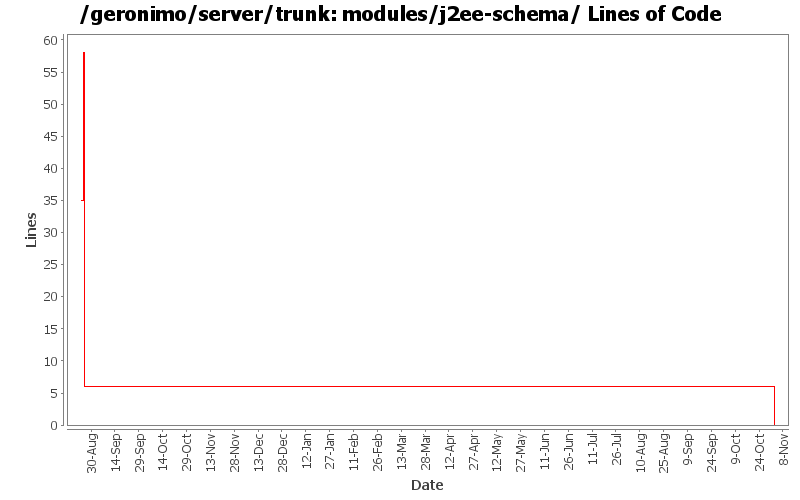

[root]/modules/j2ee-schema
 src
(0 files, 0 lines)
src
(0 files, 0 lines)
 main
(0 files, 0 lines)
main
(0 files, 0 lines)
 resources2
(0 files, 0 lines)
resources2
(0 files, 0 lines)
 META-INF
(0 files, 0 lines)
META-INF
(0 files, 0 lines)
 test
(0 files, 0 lines)
test
(0 files, 0 lines)
 java
(0 files, 0 lines)
java
(0 files, 0 lines)

| Author | Changes | Lines of Code | Lines per Change |
|---|---|---|---|
| Totals | 9 (100.0%) | 46 (100.0%) | 5.1 |
| jdillon | 5 (55.6%) | 46 (100.0%) | 9.2 |
| prasad | 4 (44.4%) | 0 (0.0%) | 0.0 |
GERONIMO-3565. Modules distributed amongst framework/modules and plugins
0 lines of code changed in 4 files:
(GERONIMO-2331) Convert to standard m2 layout
6 lines of code changed in 1 file:
(GERONIMO-2332) Applied GERONIMO-2332-trunk-v2.patch as it overlapped with m2 layout standardization
17 lines of code changed in 1 file:
(GERONIMO-2331) First round of m2 layout standardization, includes most modules (except j2ee-builder and j2ee-schema)
23 lines of code changed in 1 file:
Change the scm urls to reflect the new location in svn
0 lines of code changed in 2 files: